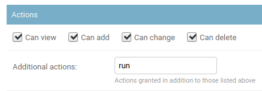

Custom Scripts
Custom scripting was introduced to provide a way for users to execute custom logic from within the NetBox UI. Custom scripts enable the user to directly and conveniently manipulate NetBox data in a prescribed fashion. They can be used to accomplish myriad tasks, such as:
- Automatically populate new devices and cables in preparation for a new site deployment
- Create a range of new reserved prefixes or IP addresses
- Fetch data from an external source and import it to NetBox
Custom scripts are Python code and exist outside of the official NetBox code base, so they can be updated and changed without interfering with the core NetBox installation. And because they're completely custom, there is no inherent limitation on what a script can accomplish.
Writing Custom Scripts
All custom scripts must inherit from the extras.scripts.Script base class. This class provides the functionality necessary to generate forms and log activity.
from extras.scripts import Script
class MyScript(Script):
...
Scripts comprise two core components: a set of variables and a run() method. Variables allow your script to accept user input via the NetBox UI, but they are optional: If your script does not require any user input, there is no need to define any variables.
The run() method is where your script's execution logic lives. (Note that your script can have as many methods as needed: this is merely the point of invocation for NetBox.)
class MyScript(Script):
var1 = StringVar(...)
var2 = IntegerVar(...)
var3 = ObjectVar(...)
def run(self, data, commit):
...
The run() method should accept two arguments:
data- A dictionary containing all of the variable data passed via the web form.commit- A boolean indicating whether database changes will be committed.
Note
The commit argument was introduced in NetBox v2.7.8. Backward compatibility is maintained for scripts which accept only the data argument, however beginning with v2.10 NetBox will require the run() method of every script to accept both arguments. (Either argument may still be ignored within the method.)
Defining script variables is optional: You may create a script with only a run() method if no user input is needed.
Any output generated by the script during its execution will be displayed under the "output" tab in the UI.
By default, scripts within a module are ordered alphabetically in the scripts list page. To return scripts in a specific order, you can define the script_order variable at the end of your module. The script_order variable is a tuple which contains each Script class in the desired order. Any scripts that are omitted from this list will be listed last.
from extras.scripts import Script
class MyCustomScript(Script):
...
class AnotherCustomScript(Script):
...
script_order = (MyCustomScript, AnotherCustomScript)
Module Attributes
name
You can define name within a script module (the Python file which contains one or more scripts) to set the module name. If name is not defined, the module's file name will be used.
Script Attributes
Script attributes are defined under a class named Meta within the script. These are optional, but encouraged.
name
This is the human-friendly names of your script. If omitted, the class name will be used.
description
A human-friendly description of what your script does.
field_order
By default, script variables will be ordered in the form as they are defined in the script. field_order may be defined as an iterable of field names to determine the order in which variables are rendered within a default "Script Data" group. Any fields not included in this iterable be listed last. If fieldsets is defined, field_order will be ignored. A fieldset group for "Script Execution Parameters" will be added to the end of the form by default for the user.
fieldsets
fieldsets may be defined as an iterable of field groups and their field names to determine the order in which variables are group and rendered. Any fields not included in this iterable will not be displayed in the form. If fieldsets is defined, field_order will be ignored. A fieldset group for "Script Execution Parameters" will be added to the end of the fieldsets by default for the user.
An example fieldset definition is provided below:
class MyScript(Script):
class Meta:
fieldsets = (
('First group', ('field1', 'field2', 'field3')),
('Second group', ('field4', 'field5')),
)
commit_default
The checkbox to commit database changes when executing a script is checked by default. Set commit_default to False under the script's Meta class to leave this option unchecked by default.
commit_default = False
job_timeout
Set the maximum allowed runtime for the script. If not set, RQ_DEFAULT_TIMEOUT will be used.
This feature was introduced in v3.2.1
Accessing Request Data
Details of the current HTTP request (the one being made to execute the script) are available as the instance attribute self.request. This can be used to infer, for example, the user executing the script and the client IP address:
username = self.request.user.username
ip_address = self.request.META.get('HTTP_X_FORWARDED_FOR') or \
self.request.META.get('REMOTE_ADDR')
self.log_info(f"Running as user {username} (IP: {ip_address})...")
For a complete list of available request parameters, please see the Django documentation.
Reading Data from Files
The Script class provides two convenience methods for reading data from files:
load_yamlload_json
These two methods will load data in YAML or JSON format, respectively, from files within the local path (i.e. SCRIPTS_ROOT).
Logging
The Script object provides a set of convenient functions for recording messages at different severity levels:
log_debuglog_successlog_infolog_warninglog_failure
Log messages are returned to the user upon execution of the script. Markdown rendering is supported for log messages.
Change Logging
To generate the correct change log data when editing an existing object, a snapshot of the object must be taken before making any changes to the object.
if obj.pk and hasattr(obj, 'snapshot'):
obj.snapshot()
obj.property = "New Value"
obj.full_clean()
obj.save()
Error handling
Sometimes things go wrong and a script will run into an Exception. If that happens and an uncaught exception is raised by the custom script, the execution is aborted and a full stack trace is reported.
Although this is helpful for debugging, in some situations it might be required to cleanly abort the execution of a custom script (e.g. because of invalid input data) and thereby make sure no changes are performed on the database. In this case the script can throw an AbortScript exception, which will prevent the stack trace from being reported, but still terminating the script's execution and reporting a given error message.
from utilities.exceptions import AbortScript
if some_error:
raise AbortScript("Some meaningful error message")
Variable Reference
Default Options
All custom script variables support the following default options:
default- The field's default valuedescription- A brief user-friendly description of the fieldlabel- The field name to be displayed in the rendered formrequired- Indicates whether the field is mandatory (all fields are required by default)widget- The class of form widget to use (see the Django documentation)
StringVar
Stores a string of characters (i.e. text). Options include:
min_length- Minimum number of charactersmax_length- Maximum number of charactersregex- A regular expression against which the provided value must match
Note that min_length and max_length can be set to the same number to effect a fixed-length field.
TextVar
Arbitrary text of any length. Renders as a multi-line text input field.
IntegerVar
Stores a numeric integer. Options include:
min_value- Minimum valuemax_value- Maximum value
BooleanVar
A true/false flag. This field has no options beyond the defaults listed above.
ChoiceVar
A set of choices from which the user can select one.
choices- A list of(value, label)tuples representing the available choices. For example:
CHOICES = (
('n', 'North'),
('s', 'South'),
('e', 'East'),
('w', 'West')
)
direction = ChoiceVar(choices=CHOICES)
In the example above, selecting the choice labeled "North" will submit the value n.
MultiChoiceVar
Similar to ChoiceVar, but allows for the selection of multiple choices.
ObjectVar
A particular object within NetBox. Each ObjectVar must specify a particular model, and allows the user to select one of the available instances. ObjectVar accepts several arguments, listed below.
model- The model classquery_params- A dictionary of query parameters to use when retrieving available options (optional)null_option- A label representing a "null" or empty choice (optional)
To limit the selections available within the list, additional query parameters can be passed as the query_params dictionary. For example, to show only devices with an "active" status:
device = ObjectVar(
model=Device,
query_params={
'status': 'active'
}
)
Multiple values can be specified by assigning a list to the dictionary key. It is also possible to reference the value of other fields in the form by prepending a dollar sign ($) to the variable's name.
region = ObjectVar(
model=Region
)
site = ObjectVar(
model=Site,
query_params={
'region_id': '$region'
}
)
MultiObjectVar
Similar to ObjectVar, but allows for the selection of multiple objects.
FileVar
An uploaded file. Note that uploaded files are present in memory only for the duration of the script's execution: They will not be automatically saved for future use. The script is responsible for writing file contents to disk where necessary.
IPAddressVar
An IPv4 or IPv6 address, without a mask. Returns a netaddr.IPAddress object.
IPAddressWithMaskVar
An IPv4 or IPv6 address with a mask. Returns a netaddr.IPNetwork object which includes the mask.
IPNetworkVar
An IPv4 or IPv6 network with a mask. Returns a netaddr.IPNetwork object. Two attributes are available to validate the provided mask:
min_prefix_length- Minimum length of the maskmax_prefix_length- Maximum length of the mask
Running Custom Scripts
Note
To run a custom script, a user must be assigned the extras.run_script permission. This is achieved by assigning the user (or group) a permission on the Script object and specifying the run action in the admin UI as shown below.

Via the Web UI
Custom scripts can be run via the web UI by navigating to the script, completing any required form data, and clicking the "run script" button. It is possible to schedule a script to be executed at specified time in the future. A scheduled script can be canceled by deleting the associated job result object.
Via the API
To run a script via the REST API, issue a POST request to the script's endpoint specifying the form data and commitment. For example, to run a script named example.MyReport, we would make a request such as the following:
curl -X POST \
-H "Authorization: Token $TOKEN" \
-H "Content-Type: application/json" \
-H "Accept: application/json; indent=4" \
http://netbox/api/extras/scripts/example.MyReport/ \
--data '{"data": {"foo": "somevalue", "bar": 123}, "commit": true}'
Optionally schedule_at can be passed in the form data with a datetime string to schedule a script at the specified date and time.
Via the CLI
Scripts can be run on the CLI by invoking the management command:
python3 manage.py runscript [--commit] [--loglevel {debug,info,warning,error,critical}] [--data "<data>"] <module>.<script>
The required <module>.<script> argument is the script to run where <module> is the name of the python file in the scripts directory without the .py extension and <script> is the name of the script class in the <module> to run.
The optional --data "<data>" argument is the data to send to the script
The optional --loglevel argument is the desired logging level to output to the console.
The optional --commit argument will commit any changes in the script to the database.
Example
Below is an example script that creates new objects for a planned site. The user is prompted for three variables:
- The name of the new site
- The device model (a filtered list of defined device types)
- The number of access switches to create
These variables are presented as a web form to be completed by the user. Once submitted, the script's run() method is called to create the appropriate objects.
from django.utils.text import slugify
from dcim.choices import DeviceStatusChoices, SiteStatusChoices
from dcim.models import Device, DeviceRole, DeviceType, Manufacturer, Site
from extras.scripts import *
class NewBranchScript(Script):
class Meta:
name = "New Branch"
description = "Provision a new branch site"
field_order = ['site_name', 'switch_count', 'switch_model']
site_name = StringVar(
description="Name of the new site"
)
switch_count = IntegerVar(
description="Number of access switches to create"
)
manufacturer = ObjectVar(
model=Manufacturer,
required=False
)
switch_model = ObjectVar(
description="Access switch model",
model=DeviceType,
query_params={
'manufacturer_id': '$manufacturer'
}
)
def run(self, data, commit):
# Create the new site
site = Site(
name=data['site_name'],
slug=slugify(data['site_name']),
status=SiteStatusChoices.STATUS_PLANNED
)
site.save()
self.log_success(f"Created new site: {site}")
# Create access switches
switch_role = DeviceRole.objects.get(name='Access Switch')
for i in range(1, data['switch_count'] + 1):
switch = Device(
device_type=data['switch_model'],
name=f'{site.slug}-switch{i}',
site=site,
status=DeviceStatusChoices.STATUS_PLANNED,
device_role=switch_role
)
switch.save()
self.log_success(f"Created new switch: {switch}")
# Generate a CSV table of new devices
output = [
'name,make,model'
]
for switch in Device.objects.filter(site=site):
attrs = [
switch.name,
switch.device_type.manufacturer.name,
switch.device_type.model
]
output.append(','.join(attrs))
return '\n'.join(output)